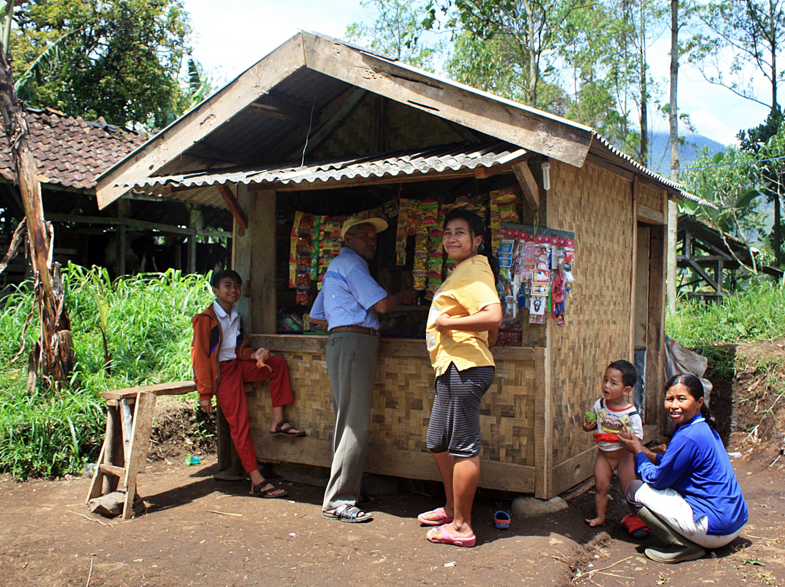

<title>Catatkas</title>
<style>:root{--accent:#15803D;--brand:#15803D}</style>
<svg id="brandmark" hidden viewBox="0 0 40 40"><rect width="40" height="40" rx="10" fill="#15803D"/><g transform="translate(8 8)" fill="none" stroke="#fff" stroke-width="2.4" stroke-linecap="round" stroke-linejoin="round"><path d="M21 12a8 8 0 0 1-11.6 7.1L4 20l1-4.6A8 8 0 1 1 21 12z"/><path d="M8.5 11h7M8.5 14h4"/></g></svg>
<section class="brand">
  <div class="split">
    <div><div class="logo"></div><h1>Catatkas: pemilik warung mencatat kas lewat chat WhatsApp</h1>
    <p class="lede">Bot pembukuan untuk warung dan UMKM · prototipe hackathon</p></div>
    <div class="phone rv"><div class="top">Catatkas<small>bot WhatsApp</small></div>
      <p class="me">jual gula 2kg 36rb</p>
      <p>Dicatat. Pemasukan Rp36.000 · Sembako</p>
      <p class="me">[foto nota grosir]</p>
      <p>Pengeluaran Rp412.000 · 9 barang. Benar?</p>
    </div>
  </div>
  <p class="source">Ilustrasi percakapan prototipe, bukan data pengguna</p>
  <aside class="notes">Catatkas adalah bot WhatsApp. Pemilik warung cukup mengetik "jual gula 2 kilo 36 ribu" atau mengirim foto nota, dan bot mencatatnya sebagai pemasukan atau pengeluaran. Tidak ada aplikasi baru yang harus diunduh. Malam hari bot mengirim ringkasan: hari ini untung berapa, stok apa yang menipis.</aside>
</section>
<section>
  <div class="eyebrow">Masalah</div>
  <h2><em>Tiga dari empat</em> UMKM masih mencatat keuangan secara manual</h2>
  <div class="split">
    <div class="iso" data-of="4" data-hi="3" data-icon="doc" style="--s:120px"></div>
    <div><div class="kpis"><div class="hi"><b>77%</b><span>UMKM mencatat di buku tulis, nota, atau tidak mencatat sama sekali</span></div></div>
    <p class="lede">Uang usaha dan uang dapur bercampur di laci yang sama.</p></div>
  </div>
  <p class="source">Sumber: OCBC x NielsenIQ, Business Fitness Index 2024, via VIVA [C6]</p>
  <aside class="notes">Angka ini dari survei OCBC bersama NielsenIQ, jadi survei bank, dan ukuran sampelnya tidak disebut di artikel. Saya pakai karena arahnya sama dengan yang kami lihat di warung sekitar rumah. Tanpa catatan, pemilik tidak tahu untung bersihnya, dan bank tidak punya dasar untuk memberi pinjaman.</aside>
</section>
<section class="media">
  <div class="eyebrow">Siapa</div>
  <h2>Di desa, literasi keuangan sepuluh poin di bawah kota</h2>
  <div class="cols" style="--max:80">
    <div class="hi" style="--v:59.25;--d:0"><b>59,25%</b><i></i><span>Perdesaan</span></div>
    <div style="--v:65.43;--d:1"><b>65,43%</b><i></i><span>Nasional</span></div>
    <div style="--v:69.71;--d:2"><b>69,71%</b><i></i><span>Perkotaan</span></div>
  </div>
  <p class="source">Sumber: OJK dan BPS, SNLIK 2024, indeks literasi keuangan [C2] [C1]</p>
  <figure class="pic"><figcaption class="credit">Warung di Garut, Jawa Barat · Foto: Gunawan Kartapranata, CC BY-SA 3.0, Wikimedia Commons</figcaption></figure>
  <aside class="notes">Survei nasional OJK dan BPS tahun 2024. Literasi naik, jadi masalahnya bukan pemilik warung tidak bisa berhitung. Masalahnya pencatatan butuh kebiasaan dan alat terpisah. Warung seperti di foto ini paling jauh dari aplikasi akuntansi, tapi paling dekat dengan WhatsApp.</aside>
</section>
<section>
  <div class="eyebrow">Kenapa sekarang</div>
  <h2>Hampir <em>empat dari lima</em> orang Indonesia sudah online</h2>
  <div class="split">
    <div class="iso" data-of="10" data-hi="8" data-icon="person" style="--s:92px"></div>
    <div><div class="kpis"><div class="hi"><b>79,5%</b><span>penetrasi internet usia 13+, 2024. Naik dari 78,19% di survei sebelumnya</span></div></div>
    <p class="lede">Satu ikon = sekitar 10% penduduk. Pemilik warung sudah memakai chat setiap hari.</p></div>
  </div>
  <p class="source">Sumber: APJII, Survei Penetrasi Internet 2024 [C3]</p>
  <aside class="notes">Yang berubah bukan teknologinya, tapi siapa yang sudah memegangnya. Model bahasa sekarang bisa membaca "jual gula dua kilo tiga puluh enam ribu" dan foto nota yang miring. Dua tahun lalu itu butuh formulir. Sekarang cukup chat.</aside>
</section>
<section>
  <div class="eyebrow">Produk</div>
  <h2>Satu pesan jadi satu baris pembukuan</h2>
  <div class="split">
    <div><p>Pemilik warung mengetik seperti biasa. Bot merapikan kategori, jumlah dan tanggal, lalu bertanya balik kalau ragu.</p>
    <p class="lede">Pukul 21.00: laba hari ini dan barang yang perlu dibeli ulang.</p></div>
    <div class="phone rv"><div class="top">Catatkas<small>bot WhatsApp</small></div>
      <p class="me">laporan</p>
      <p>Hari ini: masuk Rp1.240.000, keluar Rp412.000.<code>Laba     Rp828.000
Stok tipis: gula, minyak</code></p>
      <p class="me">bukan, nota tadi 41rb</p>
      <p>Diperbaiki: Pengeluaran Rp41.000</p>
    </div>
  </div>
  <p class="source">Ilustrasi percakapan prototipe Catatkas, bukan data pengguna</p>
  <aside class="notes">Ini momen yang kami kejar: pemilik warung tidak pernah membuka aplikasi. Ia mengetik seperti mengirim pesan ke anaknya. Bot yang merapikan kategori, jumlah, dan tanggal. Kalau ragu, bot bertanya balik, bukan menebak.</aside>
</section>
<section>
  <div class="eyebrow">Demo</div>
  <h2>Dari chat ke laporan harian dalam tiga langkah</h2>
  <div class="phones rv">
    <figure><div class="phone"><div class="top">Catatkas<small>bot WhatsApp</small></div>
      <p class="me">jual gula 2kg 36rb</p><p class="me">[foto nota grosir]</p><p>Dicatat 2 transaksi.</p></div>
      <figcaption>1. Kirim<span>teks, suara, atau foto nota</span></figcaption></figure>
    <figure><div class="phone"><div class="top">Catatkas<small>bot WhatsApp</small></div>
      <p>Pengeluaran Rp412.000 · 9 barang. Benar?</p><p class="me">bukan, 41rb</p><p>Diperbaiki: Rp41.000</p></div>
      <figcaption>2. Koreksi<span>bot bertanya kalau ragu</span></figcaption></figure>
    <figure><div class="phone"><div class="top">Catatkas<small>bot WhatsApp</small></div>
      <p class="me">laporan minggu</p><p>Masuk Rp8,1 jt<br>Keluar Rp5,3 jt<br><b>Laba Rp2,8 jt</b></p></div>
      <figcaption>3. Laporan<span>laba minggu ini</span></figcaption></figure>
  </div>
  <p class="source">Ilustrasi alur prototipe, angka contoh, bukan data pengguna</p>
  <aside class="notes">Di video demo kami tunjukkan tiga hal itu dari ponsel sungguhan. Koreksi penting: kalau bot salah membaca nota, pemilik cukup membalas "bukan, 41 ribu", dan baris itu diperbaiki. Angka di layar ketiga adalah contoh, bukan data warung.</aside>
</section>
<section>
  <div class="eyebrow">Yang gagal sebelumnya</div>
  <h2>BukuKas punya dana triliunan dan tetap tutup</h2>
  <div class="flow rv">
    <div><svg class="ico"><use href="#i-coin"/></svg><b>Jan 2022</b><span>Lummo, induk BukuKas, meraih Seri C Rp1,14 triliun [C8]</span></div><em>→</em>
    <div class="hi"><svg class="ico"><use href="#i-alert"/></svg><b>26 Mei 2023</b><span>BukuKas berhenti dipakai [C7]</span></div><em>→</em>
    <div><svg class="ico"><use href="#i-chat"/></svg><b>Catatkas</b><span>Tanpa aplikasi baru: hidup di chat yang sudah dibuka setiap hari</span></div>
  </div>
  <p class="source">Sumber: youngster.id, Mei 2023 [C8] [C7]</p>
  <aside class="notes">Ini data yang melawan kami, dan juri pasti tahu. BukuKas menarik jutaan bisnis lalu tutup. Pelajaran kami: aplikasi terpisah butuh kebiasaan baru, dan uang tidak menjamin pemakaian. Catatkas hidup di chat yang sudah dibuka ratusan kali sehari. Kami juga belum membuktikan orang mau membayar. Itu yang kami uji pertama.</aside>
</section>
<section>
  <div class="eyebrow">Pasar</div>
  <h2>Satu persen merchant QRIS setara <em>Rp70 miliar</em> per tahun</h2>
  <div class="split">
    <div><div class="kpis" style="grid-auto-flow:row;gap:26px">
      <div><b>39,3 juta</b><span>merchant QRIS, 93,16% di antaranya UMKM [C5]</span></div>
      <div class="hi"><b>Rp70,7 M</b><span>1% × Rp15.000 per bulan × 12 bulan</span></div>
    </div></div>
    <div class="rings">
      <div style="width:340px;height:340px"><div><b>39,3 juta</b><span>merchant QRIS [C5]</span></div></div>
      <div class="hi" style="width:180px;height:180px"><div><b>393 ribu</b><span>1% target</span></div></div>
    </div>
  </div>
  <p class="source">Sumber: Bank Indonesia, 2025 [C5]; 1% dan harga Rp15.000 adalah asumsi tim</p>
  <aside class="notes">Kami hitung dari bawah. Merchant QRIS sudah menerima pembayaran digital, jadi mereka pasar pertama. Harga lima belas ribu sebulan adalah rencana kami dan belum diuji. Jumlah UMKM nasional sekitar 64 juta menurut data Kemenkop UKM [C4], tapi angka itu sudah lama, jadi kami tidak memakainya untuk hitungan.</aside>
</section>
<section class="media">
  <div class="eyebrow">Pengguna pertama</div>
  <h2>Seratus warung pertama datang dari satu pasar dan satu grup</h2>
  <div class="tl rv" style="grid-template-columns:1fr 1fr 1fr">
    <div><svg class="ico"><use href="#i-store"/></svg><b>Mg 1–2</b><span>Datangi 30 warung di pasar dekat tim</span></div>
    <div><svg class="ico"><use href="#i-users"/></svg><b>Mg 3–6</b><span>Grup paguyuban: satu warung ajak lima</span></div>
    <div class="hi"><svg class="ico"><use href="#i-flag"/></svg><b>Mg 8</b><span>Target 100 warung aktif</span></div>
  </div>
  <p class="source">Sumber: rencana tim, bukan data luar</p>
  <figure class="pic"><figcaption class="credit">Warung di Pangkep–Jeneponto, Sulawesi Selatan · Foto: Midori, CC BY 3.0, Wikimedia Commons</figcaption></figure>
  <aside class="notes">Belum ada pengguna. Kami tidak mau menulis angka traksi yang tidak ada. Warung seperti di foto adalah pengguna pertama kami. Rencana delapan minggu ini yang akan kami laporkan balik ke juri: berapa yang masih mencatat setelah minggu kedua, dan berapa yang mau membayar.</aside>
</section>
<section>
  <div class="eyebrow">Tim</div>
  <h2>Ini deck contoh, jadi belum ada tim</h2>
  <div class="cards rv">
    <div><svg class="ico"><use href="#i-code"/></svg><b>Pengembang bot</b><span>Backend WhatsApp Business, pembaca nota</span></div>
    <div><svg class="ico"><use href="#i-store"/></svg><b>Orang warung</b><span>Pernah menjaga warung, kenal paguyuban pedagang</span></div>
    <div class="hi"><svg class="ico"><use href="#i-user"/></svg><b>Nama belum ada</b><span>Deck contoh: tim sungguhan menaruh nama dan bukti kerja di sini</span></div>
  </div>
  <aside class="notes">Deck ini contoh, dan kami tidak mau mengarang nama orang. Uji delapan minggu butuh dua peran: satu orang yang membangun bot dan backend, dan satu orang yang pernah menjaga warung sehingga tahu cara pedagang mencatat. Tim sungguhan menaruh nama dan satu bukti kerja per orang di sini.</aside>
</section>
<section>
  <div class="eyebrow">Permintaan</div>
  <h2>Kami minta akses API WhatsApp Business dan 100 warung uji</h2>
  <div class="flow rv">
    <div><svg class="ico"><use href="#i-store"/></svg><b>Mg 1–2</b><span>100 warung mulai mencatat lewat chat</span></div><em>→</em>
    <div><svg class="ico"><use href="#i-search"/></svg><b>Mg 2</b><span>Ukur retensi: berapa warung masih mencatat</span></div><em>→</em>
    <div><svg class="ico"><use href="#i-users"/></svg><b>Mg 3–6</b><span>Koreksi otomatis, laporan harian</span></div><em>→</em>
    <div class="hi"><svg class="ico"><use href="#i-flag"/></svg><b>Mg 8</b><span>Hitung warung yang mau bayar Rp15.000/bulan</span></div>
  </div>
  <p class="source">Sumber: rencana tim, bukan data luar</p>
  <aside class="notes">Kalau menang, hadiah dipakai untuk biaya pesan WhatsApp Business dan server selama uji coba. Hasil yang kami janjikan: retensi minggu kedua dan jumlah warung yang mau membayar lima belas ribu sebulan.</aside>
</section>
